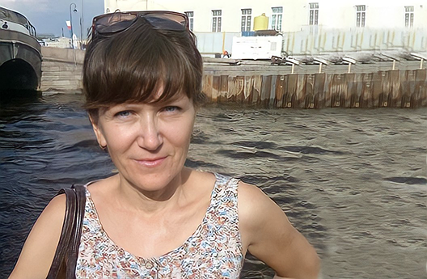

-
 Стрессоустойчивость. Как сохранить себя в критической ситуации?
Стрессоустойчивость. Как сохранить себя в критической ситуации?
Пару лет назад мне сделали операцию по удалению опухоли на кости черепа. Благодаря системным знаниям, я сумела взять себя в руки и предпринять нужные действия...
Татьяна Кузьминапреподаватель английского и французского языков Смотреть видео -
 Я не мог учиться. Почему?
Я не мог учиться. Почему?
На пороге вступления во взрослую жизнь я погрузился в КОМПЬЮТЕРНЫЕ ИГРЫ, и учеба пошла на спад. Несмотря на то, что с 5-го класса я подавал большие надежды в точных науках, интересовался математикой, участвовал в международных олимпиадах по физике, в 9, 10 и 11 классах какая-то внутренняя подавленность и ригидность стали мешать...
Артем Ашимов Смотреть видео -
СВП помогла избавиться от обид и страха выступать перед людьми
Раньше я смотрела на мир через очень черные очки. Людей я воспринимала как голограммы, мне вообще не хотелось их видеть и слышать. Люди как будто специально были созданы только для того, чтобы обижать меня. Однажды я даже обиделась на целую страну и народ ее населяющий. На тренинге мне наконец открылась истинная картина окружающего меня мира...
Мария Стариковавостоковед Смотреть видео -
 СВП показала мое место в мире, среди людей. Я точно понимаю, где смогу быть эффективным
СВП показала мое место в мире, среди людей. Я точно понимаю, где смогу быть эффективным
С детства меня всегда интересовали вопросы о том, кто мы, откуда, почему так себя ведём. Хотелось найти универсальный подход к каждому, и я начал учиться на психолога. Не находя ответов на свои вопросы, я свалился в очень серьезный экзистенциальный кризис и не мог понять, куда мне дальше двигаться. На тренинге по системно-векторной психологии откровения шли буквально в каждом предложении...
Евгений Устиновичинтернет-маркетолог Смотреть видео -
 Все есть, а счастья нет. Тренинг дал инструменты, чтобы решить все вопросы
Все есть, а счастья нет. Тренинг дал инструменты, чтобы решить все вопросы
В свои 36 лет я была в жизненном тупике. Нас с мужем ничто не держало вместе кроме ребенка. Более 10 лет у меня была тяжелейшая депрессия, с таблетками, я могла целыми днями лежать в постели. Мне ничего не хотелось, было постоянное ощущение беспокойства. Я не могла найти общий язык с ребенком, у него были постоянные истерики и упрямство. После тренинга я стала совершенно другой. Муж даже пошел на тренинг, чтобы стать таким же счастливым.
Татьяна Щербаковаврач-невролог Смотреть видео -
 После тренинга полностью прошло желание напиваться
После тренинга полностью прошло желание напиваться
До тренинга я был алкоголиком. Регулярные пьянки, абсолютно разрушенная жизнь. Обида, вина, недовольство. Из-за них не видишь, не слышишь, не можешь дышать. У меня что-то болело, но я не знал, что и не думал, что с этим можно что-то сделать. Я просто думал, что раз так сложилась моя жизнь, то выхода нет. Я даже не пытался его искать. На тренинге Юрия Бурлана человеку открывается его путь...
Рустам Асфандияровдизайнер Смотреть видео -
 Родные всегда считали меня чудаковатой. Как принять себя?
Родные всегда считали меня чудаковатой. Как принять себя?
Как изменить себя и стать другой? Я читала много литературы по психологии на эту тему, но у меня ничего не получалось. Самые близкие люди – мама, сестра, дети – всегда видели во мне чудаковатость...
Елена Ваньковаглавный бухгалтер Смотреть видео -
 Я избавилась от истеричных состояний, слез в себя, чувства жалости к себе
Я избавилась от истеричных состояний, слез в себя, чувства жалости к себе
После прохождения первого уровня,состояние выровнились так значительно, что уже даже и не вспомню, как делать истерику. Именно как делать их) Появилась стрессоустойчивость, а ни мандраж при общении с людьми, такой что хотелось побыстрей сбежать от человека,хотя опасности он не представлял. Ушел страх общения,люди стали интересней.
Дарья Узинцеватехник отдела закупок Читать -
 Выход из прокрастинации
Выход из прокрастинации
Отсеклись многие незаконченные дела, которыми я мучалась годами. Все это просто не нужно мне. Не моё, а навязанное.
Арина Семеновапровизор Читать -
 Я возвращаюсь к жизни шаг за шагом благодаря СВП
Я возвращаюсь к жизни шаг за шагом благодаря СВП
То плакала, то молчала, то бездействовала, то страшно суетилась и мельтешила, внутренние состояния просто разъедали мою суть...
Анна Копыловатанцовщица Читать -
У тебя появляется выбор
До тренинга по системно-векторной психологии меня не интересовали люди с их проблемами, я никому особенно не сопереживал, всегда подмечал чьи-то изъяны. Я долгое время был в состоянии побега от жизни. Жизнь казалась мне бессмысленной, безвкусной и пустой. И я долгое время пытался понять смысл происходящего, найти Смысл. Только после тренинга я получил ответы на свои внутренние вопросы...
Юрий РейснерIT- консультант Смотреть видео -
 Как перестать лениться и прокрастинировать?
Как перестать лениться и прокрастинировать?
Лень - это вариант экономии энергии и да, человек может получить от лени некоторое удовольствие. Но оно ничтожно по сравнению с тем, чего человек может достичь в современном мире. Миллион возможностей, совершенно другое качество жизни. Если только вам удастся преодолеть лень...
Екатерина Крестниковаврач – психиатр-нарколог Смотреть видео -
Сын покончил с собой. Сегодня, несмотря на это, я смогу жить дальше!
Терапевтический эффект, который я получила ни с каким не сравнить... В разы повысилась стрессоустойчивость... Мне стало легче думать
Светлана Козловскаяпсихолог Читать -
До тренинга я была в очень тяжелых состояниях. Теперь мне все по плечу
"До тренинга я жила в каком-то беспросветном мраке, одной ногой на подоконнике. Все осложнялось тем, что со стороны с моей жизнью все было абсолютно нормально - учеба, семья, друзья. А на самом деле фоном всегда шли немые вопросы: что происходит, зачем я здесь живу? Знания, полученные на тренинге, были как лампочка, которую мне наконец включили..."
Аида Фазыловапредприниматель Смотреть видео -
Я пришел на тренинг в состоянии сильнейшего стресса
В моей жизни уже несколько лет не было ничего хорошего – в бизнесе почти банкрот, доходов нет, с женой на грани развода, общение с детьми часто с ремнем, с родными и близкими постоянные конфликты, проблемы с ЖКТ... Сейчас о своих результатах могу сказать следующее: Бизнес идет, я снова зарабатываю)) Отношения с супругой гораздо лучше. Своих детей читаю как открытую книгу, отношения стали совсем другими. Синдром раздраженного кишечника ушел после 2-го занятия... стресс? – нее, не слышал. Люди сами тянутся ко мне, а раньше шарахались))
Читать Ильшат Тямаев -

Я почувствовала, что обрела наконец-то, что так долго искала
Просто мне казалось, что за всем этим великолепием стоит какая-то сила
Марина Голомолзинажурналист Читать -
 Я стала чувствовать себя живым человеком
Я стала чувствовать себя живым человеком
Я никогда не могла понять, зачем я здесь и почему у меня не получается жить, «как все нормальные люди». Последние 2,5 года я проживала каждый свой день из последних сил
Ольга Баронкина Читать -
Ощущение такое, как камень с души: да, есть смысл
Меня не покидало внутреннее ощущение, что всё, что важно для каждого человека — семья, работа, друзья — всё это бред. Я искал и не находил ответов, на какое-то время легчало, но каждый раз это ощущение возвращалось. На тренинге по системно-векторной психологии я понял, как стать счастливым, теперь я знаю, как сделать так, чтобы моя жизнь обрела смысл.
Булат Самигуллининженер-проектировщик Смотреть видео -
 Это и есть то, что я всегда искала!
Это и есть то, что я всегда искала!
Получить удовольствие ЖИТЬ и заряд сумасшедшей энергии – самое лучшее, что может случиться с человеком, причем без мечтаний и самовнушения.
Яна Семенчуковастудентка Читать -
Происходит переосмысление неверных установок и заблуждений
Вы изменили мою жизнь к лучшему и дали мне возможность радоваться жизни и получать от этого удовольствие, вы показали мне пути развития, и мою личную свободу выбора
Михаил Филин Читать -
Я стала способна воспринимать информацию на слух
Сейчас вокруг меня не бесполезный шум, а вполне осмысленные звуки, я вслушиваюсь в речь других людей и слышу то, о чем они говорят, я слышу их смыслы, и само по себе это приносит удовольствие.
Екатерина Крестниковаврач – психиатр-нарколог Читать -
Повысилась стрессоустойчивость. Каждый новый день в радость!
И какая бы проблема не встречалась мне на пути, я точно знаю, что смогу ее решить и уже не стану прятаться от нее.
Ольга Маслобоева Читать -
Вдруг дошло: вся моя жизнь — реализация сценария на неудачу
Почему ничего не получается, почему всегда не так складываются обстоятельства, почему все порчу?..
Инесса Мелиссовмаркетолог Читать -
 Стал более сосредоточенным
Стал более сосредоточенным
Стало требоваться меньше времени чтобы выспаться, часов 6 вполне хватает (раньше хотелось спать минимум 8-10, но казалось что их не хватает).
Ильшат Габдуллининженер Читать -
Системная стрессоустойчивость творит чудеса!
Для меня всегда маркером моего психологического состояния было и есть – это выздоровление моих пациентов. Выздоравливают, значит, стресс держу. В досистемные времена я порой отказывалась от приемов, понимала, что, когда врач хочет кого-то прибить, у него никто не выздоровеет. Я давным-давно привыкла к таким отзывам – пообщались с Вами и жить захотелось, мы поговорили и как живой водой умылся и пр.
Лиясова Дина Бариевнаврач-терапевт, медицинский психолог, директор медцентра Читать -
 Было ощущение доживания жизни. Теперь я не вспоминаю о своем возрасте
Было ощущение доживания жизни. Теперь я не вспоминаю о своем возрасте
В 47 лет, в расцвете сил я впала в такой ступор, что жизнь осталось только доживать. Я не видела смысла. Для меня, человека по жизни оптимистичного, это было огромной неожиданностью. Вокруг слышится много разговоров о реализации, о поиске себя, но наступает момент, когда ты понимаешь, что смысла нет ни в деньгах, ни в семье, нигде. На тренинге по Системно-векторной психологии Юрия Бурлана без проб и ошибок можно открыть ответ на самый главный вопрос…
Елена Г. Смотреть видео -
 Каждый день происходят открытия. У меня дух захватывает!
Каждый день происходят открытия. У меня дух захватывает!
Первый месяц тренинга все время вертелась фраза в голове – «Это все правда? Я не верю! Ущипните меня, я сплю, наверное».
Наталия Свиридовапедагог, репетитор Читать -
 На тренинге я обрел смысл, понял себя, и желание играть куда-то ушло
На тренинге я обрел смысл, понял себя, и желание играть куда-то ушло
Семь лет игровой зависимости в мире онлайн-игр, где тебя знают и ждут. Это то, что заменяло мне жизнь до тренинга. Я смотрел на окружающих и не понимал, зачем мне жить так, как они, в чем смысл их работы, увлечений, отношений? Сначала я заметил, что меня перестало тянуть в игры, а потом повалились удивительные изменения.
Роман Шинявскийинженер Смотреть видео -
Системно-векторная психология - это абсолютно новый уровень знаний о человеке
Меня мучил вопрос: зачем я вообще на свет появилась? И он являлся хорошим поводом, чтобы ничего не делать в своей жизни, сидеть и ждать просветления. Сложными были отношения с мамой, было много обид. Я боялась людей — в том смысле, что боялась сближения с человеком, развития отношений. На тренинга Юрия Бурлана пришло понимание, насколько всё это зависело от меня самой, а не от других людей...
Асия Самигуллинакандидат физико-математических наук Смотреть видео -
Наконец, ощущаешь и понимаешь целое, и себя в этом целом
Тренинг наполняет не только знаниями.. Ощущение жизни возникает - словно, наконец, включили свет..
Лидия Голдобинапреподаватель, кандидат философских наук Читать
Уже 25888результатов
оставили более
20500 человек
оставили более
20500 человек
Результаты прошедших тренинг
4246 результатов


4246
результатов
Показать еще
19
декабря